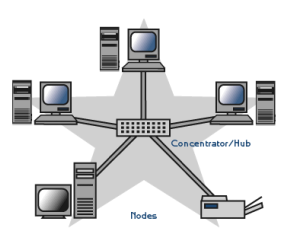
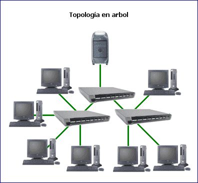
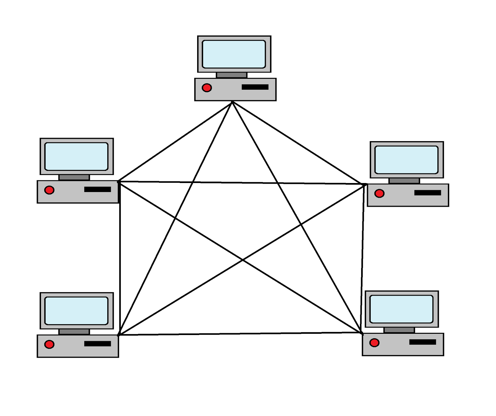
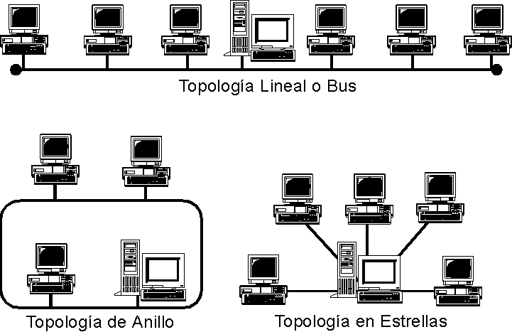

Topologías de Red
Configuraciones físicas y lógicas que definen la distribución geométrica de los nodos y los métodos de acceso al medio compartido.
Física vs Lógica: Dos Perspectivas Cruciales
En el ámbito de la ingeniería de redes, el término topología hace referencia a la estructura matemática y geométrica de un sistema de comunicaciones. Es indispensable diferenciar las dos capas principales de abstracción:
Topología Física
Define la disposición espacial del hardware, la ubicación de las canalizaciones, las rutas de interconexión y el tendido físico del cableado estructurado hacia los armarios de distribución.
Topología Lógica
Representa el mapeo del flujo de datos y señales a través de la infraestructura física. Define las rutas lógicas del tráfico basadas en los protocolos de comunicación y los accesos compartidos al medio, como los dominios de colisión.
Topología en Estrella (Star)
Es el paradigma dominante en las arquitecturas de red de área local actuales. En esta configuración, cada nodo individual mantiene un enlace físico dedicado e independiente hacia un nodo central centralizador, comúnmente un Switch de Capa 2 o Capa 3.
- Aislamiento de Fallos: El corte o avería de un segmento horizontal afecta exclusivamente a ese host terminal.
- Punto Único de Falla: Si el hardware del Switch central sufre una interrupción energética o daño en su placa primaria, toda la infraestructura dependiente queda incomunicada.
- Mantenimiento sumamente simplificado y alta compatibilidad con transmisiones Full-Duplex.

Topología en Árbol (Tree)
Conceptualmente es una variación avanzada de la topología en estrella estructurada en múltiples niveles jerárquicos. Cuenta con un nodo raíz principal que se conecta a distribuidores intermedios, encargados a su vez de interconectar subestrellas locales.
- Alta Escalabilidad: Permite la segmentación territorial por pisos de trabajo o departamentos lógicos.
- Control de Tráfico: Facilita la implementación de políticas de enrutamiento interno y listas de control de acceso (ACL).
- Requiere cálculos estrictos de agregación de enlaces para evitar cuellos de botella en los niveles troncales superiores.

Topología en Malla (Mesh)
Involucra un esquema de interconexión donde los dispositivos disponen de múltiples enlaces redundantes directos hacia los demás nodos de la infraestructura física. Puede ser implementada de forma parcial o total.
- Redundancia Absoluta: Si una ruta de fibra o cobre se fractura, los protocolos de enrutamiento dinámico (como OSPF o BGP) recalculan el salto de datos en milisegundos a través de canales alternativos.
- Costes de Implantación Elevados: Exige una alta densidad de puertos de interfaz de red y grandes volúmenes de medios de transmisión físicos.
- Utilizada comúnmente en la infraestructura de Core de centros de datos de alta disponibilidad y redes WAN de misión crítica.

Bus y Anillo (Legacy)
Sistemas clásicos comunes en los inicios de las redes de datos computacionales. En la topología de Bus, todos los hosts comparten un único canal físico lineal terminado en sus extremos. En Anillo, las estaciones se conectan en bucle cerrado cerrado de forma secuencial.
- Limitaciones de Bus: Alta tasa de colisiones. La rotura del cable principal o la ausencia de un terminador resistivo provocaba el colapso total por reflexión de ondas.
- Limitaciones de Anillo: El rendimiento disminuye a medida que se añaden nodos. Si una sola estación de trabajo falla en el anillo unidireccional, se interrumpe la continuidad física del circuito de datos.
- Actualmente obsoletas en redes locales corporativas, sustituidas íntegramente por conmutación en estrella.
